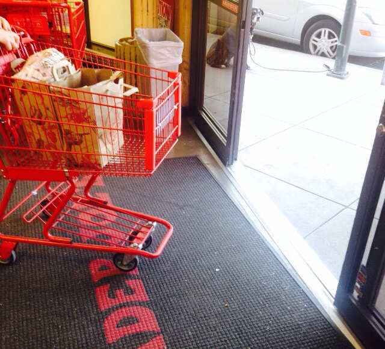

服务设计的突然被谈起让人意外，通常情况下，一个设计概念在国内的流行都会有一个充满美学意义的象征，无论是拟物化和扁平化，还是响应式与穿戴式，至少它们要看起来是美，而服务设计大量的讨论是完全基于设计过程、思维方式、甚至设计哲学，也从来没有谁从端到端去剖析一个真正基于实践的服务设计过程。
我乐观地认为这是一件值得高兴的事情，大家对思维方式和设计过程开始产生兴趣，但事实上，服务设计的难点超乎想象，在我看来它完全是一种设计思维，更是设计界对真实世界一厢情愿的总结，暂时还不足够成为影响服务产业的力量。
而对于进入这一领域的设计师，我希望解释服务设计本身的难点。
服务设计的逻辑
2011年我接触过一个客户，客户希望某个App是简单到只有一个按钮，按下之后就可以得到你所需要的所有信息，他认为大道至简以及真正的科技是让你感觉不到科技。在肯定了他超前思维的之后，我还是表达出来我们不是乔布斯的遗憾。
很有趣，这就是我们一直以来的思维模式，我们喜欢相信未来有一个世界，可以通过最简单的方式获得我们所有想要的东西，“一站式”的幻想深深植于许多人心中，但事实上，世界的发展似乎不是这样。
越来越多智能设备所带来的“碎片式接口”用另外一种方式让我们“永不掉线”，越来越多的传统服务因为技术的出现反而更加有生命力和充满魅力——纽约Chealsa Market的自制糕店会使用Square配搭手机进行移动支付；Safeway超市的收银条会把你所购买的商品按照类别进行分类方便查找；小小拉面馆也会通过短信的方式进行叫号。
最朴素的服务设计的逻辑，是如何利用新的技术或设计，去解决服务触点（Touchpoint）的问题和增加新的服务触点，使得传统的服务体验产生新的魅力。
去客户中心化
设计经历着从功能为中心到用户为中心，再从用户为中心到客户为中心的演变过程，背后承载的设计理念是：
- 功能设计：以准确输入和准确输出为成功衡量标准；
- 交互设计：在功能完成基础上加入对用户输入与输出的效能和效率的考量；
- 体验设计：考虑还未发生交互之前端到端的完整客户体验，去用户化；
而服务设计风潮之下的是“去客户中心化”，真正优秀的服务期待建立一个有生命力的环境，在环境之中，有物理设施、理念、规则、前后台的服务提供者、以及客户——在这里，客户绝对不是服务的中心，而是服务的一部分。最简单的例子是，哪怕餐厅里空无一人，高级餐厅的就餐礼节也需要就餐者等待侍者引领入位，在这里，遵循服务规则高于客户需求。
人们之所以认为“人人都可以是产品经理”是因为产品是可以从客户角度出发的设计，骂几句微博产品逻辑给自己的产品天赋加加分，然后转身成为产品经理也许可能，但是依靠强大的服务挑剔能力成为服务设计师，基本不可能，因为服务绝对不只是为客户需求准备的。
在服务设计里，你才是上帝，而绝非你的客户，你要管理的是整个环境中的：
- 设施
- 理念
- 规则
- 前台服务者（们）
- 后台服务者（们）
- 客户（们）
以及更重要的是：他们之间的关系。
系统化思考
服务设计的第一大难度是你的线性思维成为你的阻碍，从任何一个角度出发，都可能让这个服务设计失败。不像你在设计一个终端产品时，从用户目标的角度考虑，所有的交互行为都只存在于他和他最熟悉的手机，你要做的只是让信息流更加通畅，让他更快更舒服地完成交互过程。
而服务设计的网状关系使得你需要考虑更多在传统体验设计中不必重点考虑的东西，例如：
- 如何让设施表达理念？
- 如何设置理念让客户和服务者们遵守规则？
- 如何让前台服务者与客户更好地互动？
- 如何让后台服务者与前台服务者更好地互动？
- 如何让客户与设施更好地互动？
- 如何让客户之间产生互动？
当然在传统体验设计中，我们也需要考虑这些东西，但解决方案往往都是基于人与信息的，是标准化和流程化的，而在服务设计中，这样的关系通常都有人直接参与，不确定性更大，可管理性也更弱。
因此，解决一个服务体验的问题中需要更多的系统性思考，例如购物车经常被人推出超市的问题时，在多个方面你需要的思考是：
- 设施：如何让购物车不让人推出超市？
- 理念：如何依然保持超市友善的形象？
- 规则：如何让客户了解规则并接受规则？
- 前台服务者：如何让减少服务者的参与？
- 客户：如何减少客户的麻烦？
Trader Joe's用一种很有趣的方式，并考虑了多个方面的感受：在超市出口处的地毯上安装一个感应器，当购物车的尝试通过地毯时，它会自动锁死一个轮子，同时用卡通形象在门口告诉大家不要把购物车推出门外，有趣的是，它并不发出警告。这个方案在多个方面给出了它的回答：
- 设施：用感应装置阻止购物车被推出超市外；
- 理念：用卡通形象的方式表现这个信息；
- 规则：执行了规则但是也不报警，并只锁死一个轮子；
- 前台服务者：不需要去管理购物车；
- 客户：从收银到门口的一段距离依然也可以使用购物车，大部分时候也感受不到“不准把购物车推出去”的信息干扰和不信任，甚至在破坏规则时候也非常低调，不让周边的人察觉避免尴尬。

在解决任何一个服务体验的问题时，服务设计需要我们对多个维度进行系统性思考，最终才能产出一个多方都能满意的方案，而这是传统以客户为中心、任务流的思考方式所不具备的。
设计只是10%
当人的因素出现在一个系统中，并且集中在一个真实的现实环境中时，设计（或技术）能解决的问题就变得极为有限。体验设计时代带来的习惯，可能使得设计师高估设计的作用，当大部分设计师谈论的重点依然是高光或阴影的角度、按下按钮不同的状态表示、表单标签是否应该右对齐时，在服务设计中大量关于人的观察、商业的考虑、员工素质的讨论、行业特色的经验、文化差异的识别等等，就会被忽略。
这也是我极度怀疑服务设计可以作为设计公司（Design Agency）一个独立存在服务的可能性的原因：互联网产品设计也许可以通过设计外包的形式将产品概念和设计部分交由设计公司，再由技术交付团队进行交付，但服务设计的实施需要整个客户在“提供服务的过程中”进行实施，它所面对的不确定性更大，再加上大量的工作存在于沟通、流程、人事、客户服务等等，那种留下500MB的设计方案就离开的设计模式，在我看来完全没有可实施性。
复制的难度
更大的难度是缺少最佳实践，或者是无法体会到最佳实践。不像产品设计的优秀产品只需要5分钟就可以下载到手机当中，而要真正感受服务细节的真实体验，你必须有丰富的经历，就像之前谈到Trader Joe's的购物车，你需要去很多次才可能有机会体会到那么细致的服务设计。哪怕是基于移动互联网的Uber一类O2O应用，你也只有亲自体验，才能体会到整个服务体验的精致，而手里那个简单的App，只是其中很少的一部分。
而就算我们已经有机会接触到了那么多的最佳服务体验，尝试将同样的实践复制到一个新的客户上下文中，几乎是不可能的，因为你所面对差异的复杂度是远远超过线上体验的。
缺少直接体验的最佳实践，客户情境的截然不同，对于习惯于逛Dribbble找灵感、下载最新应用做参考的我们该如何是好？
行业的难度
服务体验的行业性太强，光零售体验中大型商场、购物中心、专门店、连锁超市、便利超市都有着完全不同的服务形态，而跨行业更是千差万别，例如政府机构、博物馆、交通设施、酒店等等，而不像交互或产品设计中基础的信息逻辑都非常类似，因其本质还是基于数理逻辑的计算机软件。
在这个背景下，服务设计师需要形成更完整的设计方法论和独特的设计实践，驱动真正的业务专家一起完成服务体验的设计，这也是为什么目前看到的关于服务设计的内容，绝大部分是关于设计方法论的。
给服务设计师的建议
服务设计本身的难度使我在未来5年内看低它会对整个设计领域的影响，那如果你恰好是服务设计师（我假设你95%可能性来自于设计咨询公司或服务设计专业），我有以下建议：
- 服务设计帮助你培养设计思维，设计本身就在朝跨界（Multidisplinary）与融合的方向发展，无论以后是不是成为专业的服务设计师，一旦形成了良好的设计思维，无论从事什么样的设计工作，都能帮助你脱颖而出，因此不比把服务设计当成志向，把服务设计背后所代表的设计思维作为志向；
- 尝试各种服务，特别是极端情况下的特殊服务，例如超市的退货、失物招领、酒店换房等等，服务设计真正见功力的地方是在于对于异常的处理；有机会的话，去东南亚体会酒店、去美国体会零售、去日本体会公众服务，珍惜每一次出国的机会，记录下每次你的服务过程，并尝试用系统的角度去理解为什么这么做；
- 了解政治，理解政治左右是培养自己系统性思考最好的途径之一，了解台湾学生为何占领立法院、美国的医保和两党政治有何关联、在我看来，理解了左右就理解了国家作为一个系统运行的基础规律，思维就变得不再极端和狭隘，而更多学会用“上帝视角”进行解释；
- 对科技敏感，技术对于服务带来的意义是无穷的可能性，以及对现有解决方案破坏性的创新，认为自己是艺术家只会写画，而科技是程序员的事情，这样的设计师成不了气候；
- 了解经济、服务设计的特殊性导致它必须考虑经营性，而不是写写画画看看广告公司的案例就能完成，它需要对商业模式有足够的敏感度。